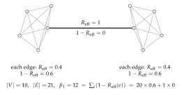
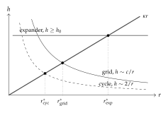

Chapter 24
Enzymes and Individuals
Composition assumed a common currency. Two learners sharing a wall were drawing on the same tokens, and that assumption did a great deal of quiet work. Drop it — let each community’s tokens be its own flavor, as the metabolisms of two separately originated biospheres would be — and something has to sit between them and convert.
That converter is this chapter’s subject, and it turns out to be an organism rather than a piece of infrastructure: a fourth access profile alongside source and prey, persistent like a source, exhaustible like prey, and unique in being adaptive in its rate. It lives by the spread, which is not a metaphor for a toll but literally the toll of the rendezvous through which the swap happens. The nearest thing in the biosphere is not a decomposer but a mycorrhizal network.
Two results give the chapter its title. The first is that the cycles of the conversion graph form an error-correcting code, and that its total detecting power is exactly the first Betti number of the graph — so how much a community can catch a mispriced exchange is a topological fact about the shape of its trade, and a conversion sitting on a bridge can never be checked at all. The second is a criterion for individuation. Communication is not perfect; the notion is recovered by interposing a medium that may drop or corrupt what passes through, and a region may close its namespace exactly when the boundary it can maintain exceeds what the error rate costs. An individual is where repair is cheaper than exposure. It is porous by necessity — perfect closure is death, for the same reason a solved science is a dead ecology — and it is a fixed point, since the closed region is itself a learner that can compose with others.
That last move closes the loop the part opened with, and it is the natural place to hand over. Once individuals are the sort of thing that can be stacked, the question of what a learner sees from higher up in the stack is no longer rhetorical — which is where the next part begins.
24.1 Introduction
24.1.1 Why the unit moves again
The series this note belongs to has moved its unit of analysis twice. In \(\chSci\) the unit is a single mortal scientist: a cost-accounted rho computation that forms hypotheses in a namespace logic, pays for its assays, and dies when its stack runs out. In \(\chComp\) the unit is a learner: a population of such computations together with their reservoirs, serving as a namespace, with a distribution over it, composed with other learners by parallel composition. That note ends by asking whether the series individual/lineage/composite continues.
It does, and the reason it does is that composition of learners yields a learner, so the construction is closed under an associative operator. But closure alone gives arbitrary nesting and no scale structure: a soup of composites has no distinguished levels. Something must pick out skill, organism, pod, species, biosphere as rungs rather than as arbitrary cuts, and the companion notes do not say what.
Two things were also missing from the economics. \(\chComp\) works in a single token flavor, so its conservation law is the flat statement that a fixed supply \(\Theta\) is never minted. Real coordination between communities is not a transfer of one fungible fuel; it is conversion, at rates, between resources that are not interchangeable — and the arbitrage machinery of [63] exists precisely to handle that. And \(\chComp\) has no geometry: its composition operator is indifferent to whether the two learners are adjacent or a galaxy apart, though nothing in the framework says the cost of reaching across should be the same in both cases.
This note supplies all three, and they turn out to be one thing.
24.1.2 The move, stated once
Give each community its own token flavor. Adjoin enzymes between flavors and weight each enzyme by its dissipation \(\theta\). The resulting weighted graph is the geometry the framework was missing; its cycle space is a code on prices; and the isoperimetry of that graph is the criterion for when a region may stop trading and start sharing — that is, for when a composition of learners becomes an individual.
24.1.3 What we claim, and what we do not
We claim: that the enzyme is derivable as a fourth access profile rather than importable as a new kind of thing (§24.4); that interposition supplies an error model natively, with \(\theta\) as its metering defect and stranding as its irreversibility (§24.5); that the detection strength of a price is \(1-\Reff\) and the total is \(\bt\) (§24.6, Theorem 24.2); that inventory-holding enzymes make arbitrage a property of a marking (§24.3); that merger is available exactly inside an isoperimetric threshold (§24.8, Proposition 24.15), with partial closure of the medium namespace as its structural form (Definition 24.6); and that a finite critical radius, together with the tower of media, forces the hierarchy that \(\chComp\) could only permit (§24.9).
We do not claim to have derived the rates. [63] takes them as given and so, in the main, do we; §24.12 says what it would take to derive them and why the numbers of \(\chGame\) are the natural candidate. We do not claim the error channel has been identified: §24.8.6 inherits, unresolved, the “which \(\varepsilon\) is binding” question of [60]. We do not claim the correspondence with observed biology is more than suggestive, though §24.6.4 notes that the ecological pyramid falls out of Proposition 2 of [63] with no adjustment, which is a check we did not arrange.
24.2 What this chapter carries forward
From \(\chSci\): the cut and the three grades of access (perception,
interaction, reflection); the assay via the where clause; the
conservation law \(\sigma + \kappa = \sigma_0 = \Theta\); the access profile
distinguishing a source (persistent emitter, rate-limited,
non-exclusive, non-adaptive) from prey (linear send, exhaustible,
exclusive, adaptive); the relaxation lattice and its ultrametric; and the
freshness-by-quotation proposition, that for any context \(C\) with
\(C[P] \neq P\) the name \(@C[P]\) does not occur in \(P\).
From \(\chGame\): the two routes to any predicate — read it, priced by formula depth, if the environment has computed it into legible structure, or drive it, priced by rendezvous — and the observation that the interesting question is not whether the work is done but who is billed for it.
From \(\chComp\): the learner as three layers (population, namespace, distribution) with the distribution inside; composition as parallel composition; the factorization theorem, that namespace disjointness is equivalent to absence of a spanning redex and to \(\mu_{12} = \mu_1 \otimes \mu_2\); the grading vector \(\mathbf{k} = (k_{\mathrm{met}}, k_{\mathrm{src}}, k_{\mathrm{prb}}, k_{\mathrm{mat}})\) over the four typed namespaces \(\Met, \Src, \Prb, \Mat\); merger \(\Merge\) as a separate operator; the instability of non-interference and its repair by rooting; and competitive dilution in closed form.
From [61] and [62]: signatures as names, token stacks as first-class terms, wrapping by construction, the cost monad \((\mathrm{Cost}, \eta, \mu)\) on \(\mathrm{ciGSLT}\) and its non-idempotence, and located resource stacks.
From [64]: the correction that a stack floating in the associative–commutative soup is ambient authority, repaired by holding every stack on a channel; the acceptance gate; the netting result; and the four cost-accounting patterns.
From [63]: conversion systems, enzymes, rates with \(r(a{\to}b)\,r(b{\to}a) = 1\); the log-rate cochain \(\ell\); the equivalence of arbitrage-freedom, exactness of \(\ell\), and existence of a valuation \(\nu\); the graph–Hodge splitting into energy and arbitrage components; \(\dim\ker\delta^\ast = \bt\); arbitrage-removal as an idempotent reflection; the first law (conservation of \(\nu\) in the lossless regime); the second (dissipation \(\theta\) makes \(\nu\) a Lyapunov function); and the insistence that \(\nu\) is a unit of account and never a medium of exchange.
From [60]: the crossover between a shared substrate and autonomous replication, at critical radius \(r^\ast \sim \sqrt{\rho v / \varepsilon}\) in an error rate \(\varepsilon\), a repair throughput \(\rho\), and a communication speed \(v\); and the closing conjecture that this crossover and the factoring of the OSLF-generated logic over a population are two views of one threshold. That conjecture is what §24.8 cashes.
From [22]: the persistent boundary-forwarder lemma, which is what makes an encoding compositional and which supplies Proposition 24.3; and the diagnosis, made there, that a mediating process written with a linear receipt models one passage rather than a passage-way.
From [66]: the combinators zero, one,
give, and, or, scale,
truncate, get, and observables.
24.3 Flavors, enzymes, and a fork in the conservation law
24.3.1 Communities are flavors
A flavored learner is a learner \(\Lrn\) in the sense of §23.3 of \(\chComp\) together with a distinguished signature \(c(\Lrn) \in \Sig\), its flavor: the signature at the head of every stack held at a name in \(\Met(\Lrn)\).
The flavor is not new apparatus. [61] already replaces one universal fuel by a family of signature-indexed resources, one per economically empowered actor; [61, \S6] calls the collapse to a single \(s_0\) the monochromatic limit. \(\chComp\) works in that limit. Taking a community’s flavor to be its own signature is the natural un-collapsing, and it is what makes “Terran food and alt-Earth food may not be mutually nutritive” a statement the calculus can express: two learners whose \(\Met\) stacks carry incomparable signatures cannot eat each other’s tokens, however adjacent they are.
An enzyme between flavors \(a\) and \(b\) is a persistent process holding two located reserves, one of each flavor, and offering a linear swap: it accepts one \(a\)-token and releases \(r(a{\to}b)\) \(b\)-tokens from its own inventory. Its toll is the metering charge of the rendezvous that performs the swap.
We flirted with engine, and it nearly won. An engine converts between two reservoirs at a rate, dissipates as it goes, and has an efficiency; the vocabulary arrives pre-loaded with the quantities this chapter needs. The payoff was real and it was specific — Remark 24.13’s observation that a trophic ratio of one in ten is a toll of \(\theta = \ln 10\) is a thermodynamic statement, and engine is the word that makes it audible.
We dropped it because that payoff is the nineteenth century’s, and so is everything else that comes with it. Engines are Carnot’s. Reservoirs, efficiency and heat death are the furniture of the physics that produced them, and the furniture arrives whether or not it was sent for. This book’s move is that the ledger is informational before it is thermal: erasure is what costs, and \(\theta\) is a rendezvous toll rather than a temperature. To name the object after a steam engine is to import a settled picture at precisely the point where the reader should be unsettled. The interlude that opens The Turn has its narrator distrust the word inspiration for smelling of the nineteenth century, of laudanum and s\’eance. Engine smells of the same decade, and is worth distrusting for the same reason.
Enzyme is the twentieth century’s word for the same job, and the better fit besides. An enzyme is specific to a substrate pair; it persists while what it binds does not, which is exactly Remark 24.3; and its one distinguishing degree of freedom is its rate, which is the only property separating the fourth row of Table 24.1 from a source and from prey. It also settles a debt. In a reaction network the no-arbitrage condition around a cycle is the Wegscheider condition for detailed balance, and the potential whose existence it is equivalent to is a chemical potential. The virtual token has a second name, and chemists have been using it since 1901. That identification is ours and we have not checked it against the chemical-kinetics literature; a reader who knows that literature should treat it as a conjecture with a citation attached rather than a result.
What is surrendered is the market register — Coase, mycorrhizal trade, and the financial combinators the reaction language is built from. Those are kept as analogies and the noun is left biochemical, on the grounds that a reader who has just been told tokens have flavors is not helped by being told they are burned.
24.3.2 The fork
There is a conservation collision here that must be settled before anything else, because the two notes being joined conserve different things. \(\chComp\) conserves tokens per flavor: \(\Theta\) is fixed and never minted. [63] conserves the scalar \(\nu\): an enzyme consumes one \(a\) and releases \(r\) units of \(b\), which is not per-flavor conserving at all. One must give.
Enzymes hold inventory. A swap is against stock, so per-flavor totals are conserved and \(r\) is the ratio at which inventory is exchanged. The cost: enzymes deplete, \(r\) moves with the marking, and \(\ell\) becomes a function of state.
Conserve only \(\nu\). Flavors interconvert at fixed rates and \(\Theta_\nu\) is the invariant. This matches [63] exactly but abandons the per-signature ledger the scientist note runs on.
We take (i). It preserves the more specific law, it keeps enzymes mortal (an enzyme that runs out of one flavor stops being an enzyme, which is what we want of an organism), and its cost — state-dependence — is where the content is.
Under (i) the log-rate cochain is a function \(\ell(M)\) of the marking \(M\) of the enzyme reserves. Consequently the Hodge splitting \(\ell = \ell_{\mathrm{en}} + \ell_{\mathrm{arb}}\) of [63, \S4] must be taken pointwise in \(M\), and arbitrage-freedom is a condition on a state of the ecology rather than on the ecology.
Immediate from Definition 24.2: the rate is computed from the reserves, and a swap changes the reserves. Appendix 24.16, block (4), exhibits a triangle of constant-product enzymes whose cycle yield is exactly \(1\) at the balanced marking and departs monotonically as one enzyme is drained; six trades of ten units carry \(\log \oint \ell\) from \(0\) to \(-1.003\).
Proposition 24.1 is not a defect. In [63] the projection \(\Pi\) onto the exact cochains is a least-squares correction performed by nobody in particular; the note flags that the operational content of “shaking the arbitrage out” is left abstract. Under (i) it is concrete and it is metabolic: an arbitrageur is a computation that traces a cycle of yield \(> 1\), and each pass moves the reserves in the direction that reduces the yield. Arbitrage-removal is not applied to the system, it is eaten out of the system, and the eating is metered like anything else. This is the sense in which the idempotent reflection of [63, Prop. 3.4] is realized rather than postulated.
Since each pass of a cycle costs the arbitrageur at least one token, and the yield per pass falls monotonically toward \(1\), there is a level of arbitrage below which removal is unprofitable. A mortal ecology therefore carries a floor of arbitrage set by its own metering, and the floor is higher the poorer the ecology.
Corollary 24.1 is \(\chSci\), Corollary 21.1 — poverty is confining — one level up and in a second currency. A rich ecology has efficient prices for the same reason a rich scientist can afford deep inquiry.
24.3.3 The reflexive observable
In [66] an observable is a time-varying quantity both parties agree on, and it is exogenous: the weather, a stock price, a block height. Under (i) the observable that sets an enzyme’s rate reads the enzyme’s own inventory. This is the one place the combinator language had to be extended, and it is worth naming, because it is what turns a contract into an organism: the contract’s terms depend on the contract’s state.
24.4 The enzyme is an organism
24.4.1 A fourth access profile
§21.10 of \(\chSci\) separates two ways of being food. A source is a persistent emitter: rate-limited, non-exclusive, non-adaptive, inexhaustible on the timescale of one learner though finite in the aggregate. Prey is a linear send: exhaustible, exclusive, adaptive. The distinction is not a distinction of sort or of rewrite rule but of multiplicity — a fact about the cut.
The enzyme is a third way, and it is obtained by taking the same four attributes and choosing a combination the table did not previously contain.
\(\fitwidth\){
| persistent | exclusive | exhaustible | adaptive | |
|---|---|---|---|---|
| Source | yes | no | in aggregate | no |
| Prey | no | yes | yes | yes |
| Scientist | —as prey, plus grade-3 exposure— | |||
| Enzyme | yes | no | per flavor | in rate |
}
The profile in Table 24.1 requires no new sort, no new rewrite rule, and no new GSLT. A persistent receipt on a quote channel supplies persistence and non-exclusivity; two located reserves supply per-flavor exhaustibility; and computing the rate from those reserves supplies rate-adaptivity. All three are available in the host calculus of \(\chSci\).
Appendix 24.15 exhibits the term. Persistence is <=;
location is a channel, per [64, \S2.2]; the rate is a
for-comprehension over the reserve channels that replaces what it
reads.
An enzyme written with a linear receipt models one conversion, not a
converter — the same bug found and fixed in the knot encoding, where
crossing gates written with <- evaporate after a single
visitation and model one passage through the diagram rather than the
diagram. The correct shape is a persistent issuer offering
linear contracts: the enzyme persists, the substrate binding does
not.
[63, \S6] introduces dissipation \(\theta(a{\to}b) \geq 0\) as a modeling parameter and reads the resulting inequality as the second law. Here \(\theta\) is not posited. Every rendezvous is metered, and the swap is a rendezvous, so \(\theta\) is the toll — and it accrues to the enzyme’s own stack, because something has to fund the enzyme’s continued existence and nothing else is available. The second law and the enzyme’s metabolism are the same fact. An enzyme whose traffic falls below its burn rate starves, exactly as a scientist does.
It is tempting to call the enzyme a decomposer, on the grounds that it lives on what others cannot metabolize. The better analogue is the mycorrhizal network [71]: it does not consume waste, it makes two otherwise incommensurable metabolisms mutually available and takes a cut. That literature is also the right prior art for §24.6.3, since it studies exchange rates set by partner choice and outside options rather than by no-arbitrage [70].
24.4.2 The combinators as reaction language
With the organism identified, the combinators of [66] sit one level down: they name the enzyme’s reactions, not the enzyme.
one\((k)\) is the funded unit transfer; give swaps which
signature funds the leg, which [64, \S3.1] observes is exactly the
two-sided surface of the cut made operational. scale\((o,c)\)
carries the rate, and by [64, \S3.6] scaling multiplies the amount
moved and not the fuel demand — cost counts funded rendezvous, not
magnitude. and is the atomic join, under which the partial-funding
hazard is structurally impossible.
An enzyme’s conversion is \[\texttt{and}\bigl(\texttt{scale}(o,\texttt{one}(a)),\; \texttt{give}(\texttt{one}(b))\bigr),\] Pattern (A) of [64, Tab. 1], bilateral cash settlement. That note shows the apparatus rewards the netted form: one transfer in the data-dependent direction instead of two gross legs, atomic by construction and costing one token instead of two.
Since \(\theta\) is the toll (Remark 24.4), netting halves the dissipation on every conversion. What [64] presents as a settlement optimization is, in this reading, a reduction of the second-law loss along every edge of the enzyme graph, and hence — by §24.6.4 — an increase in the profitable radius.
The temporal combinators do work too, and §24.11 takes them up.
24.5 The medium
24.5.1 Interposition is without loss of generality
The host calculus takes communication to be perfect. It does so without loss of generality, because imperfection can be modeled as an additional process rather than an additional rule: races and higher-order channels suffice. Generalize \[\texttt{for}(y \leftarrow x)P \mid x!(Q) \qquad\text{to}\qquad \texttt{for}(y \leftarrow x_1)P \mid C(x_1,x_2) \mid x_2!(Q),\] where \(C\) is any process joining the two endpoints. The simplest \(C\) is a persistent two-way forwarder; richer ones do arbitrarily more.
When \(C\) is the persistent two-way forwarder on \((x_1,x_2)\), the interposed term is weakly bisimilar to the direct one. Hence nothing is lost by working in the general form, and the perfect-communication calculus is recovered as the identity medium.
This is the boundary-forwarder lemma of the knot encoding [22], whose persistence is exactly what makes the encoding compositional. The forwarding steps are \(\tau\) and are absorbed by weak bisimulation; persistence is required, since a linear forwarder relays once and then is not a channel.
A medium drops when it receives on \(x_1\) and emits nothing, and corrupts when it emits a value other than the one received. Write \(p \in (0,1]\) for the per-hop probability that a message is relayed faithfully.
Proposition 24.3 is a statement about behavior, not about metering: a single gated rendezvous becomes at least two. So interposition is not a morphism in the cost-accounted category of [62] — it multiplies the gated transitions rather than preserving them — and the defect is exactly the dissipation \(\theta\) that §24.4 attributes to the enzyme. This is the third instance in the series of one pattern: in §23.4.3 of \(\chComp\) the lax comparison map’s defect is the interaction; here the interposition’s defect is the cost of distance. Distance is not a parameter of this calculus. Distance is interposition, and its price is the failure of a map to be strict.
24.5.2 A ladder of media
\(\fitwidth\){
| Rung | What \(C\) does | What it contributes |
|---|---|---|
| relay | forwards faithfully | \(\theta_{\mathrm{toll}}\) only |
| lossy | drops with probability \(1-p\) | \(\theta_{\mathrm{loss}}\), stranding |
| corrupting | emits a wrong value | the syndrome of Theorem 24.1 |
| reading | forwards and retains | grade-one access to all traffic |
| converting | swaps flavor against inventory | the enzyme of Definition 24.2 |
}
A reading medium on a bridge has grade-one access to everything crossing it. §24.10 argues that commerce across an incommensurable boundary can only be epistemic; Table 24.2 adds that the boundary itself is an epistemic asset, and that whoever runs the forwarder is best placed to harvest it. This is not a decoration: it predicts that intermediaries accumulate information rents, which is what intermediaries observably do.
24.5.3 Loss is stranding, and stranding is exergy
Under fork (i) the per-flavor totals are conserved by construction. A message dropped by a lossy medium is therefore not annihilated: it rests on a channel no process will receive on. Total value \(\nu\) is conserved; available value strictly decreases.
The free-energy reading that [63, Rmk. 6.2] wants and can only posit is here realized. Exergy is \(\nu\) minus the measure of the stranded set, and it is monotone because stranding is irreversible: recovering a stranded message would require a process that can name the channel it rests on, which by construction is the medium that failed.
Along a path of \(d\) hops, tolls accumulate additively and reliability compounds as \(p^d\). Writing \(\theta = \theta_{\mathrm{toll}} + \theta_{\mathrm{loss}}\) with \(\theta_{\mathrm{loss}} = -\log p\), both contributions are additive in the cost metric and the delivered value is \(\nu e^{-\theta d}\) as before.
So Proposition 24.12’s profitable radius is partly an information horizon and not only an economic one: a pathway can price itself out either by charging too much or by losing too much, and the two enter the same exponent.
Theorem 24.1 treats a corrupted rate \(a\mathbf{1}_e\) as given. Table 24.2 says where it comes from: a corrupting medium on the quote path of enzyme \(e\). The price code is not detecting an abstract misquotation; it is detecting the medium.
24.5.4 The medium is a namespace, and it is higher order
Since \(C\) is a process, \(@C\) is a name, and \(*@C = C\) recovers the process. Media are therefore nameable, and the media of a region form a namespace.
For a region \(B\), put \[\Chn(B) \;=\; \bigl\{\, @C \;:\; C \text{ mediates a rendezvous within } B \,\bigr\}.\]
This namespace is higher order in two senses, and both do work. First, \(C\)’s free names are the endpoints it joins, so \(@C\) sits one level up the reflection tower from the names it carries: a medium is a name for a carrier of names. Second, a rich \(C\) is itself realized by interposition, so media are mediated by media.
\(\Chn\) at one level is the endpoint namespace at the next: the media over which a region’s parts communicate are the channels of the region taken as a part of something larger. The tower is well-founded downwards, since by the no-self-code theorem a name codes a strictly smaller term, and bounded upwards by Proposition 24.12, since a level whose media exceed the profitable radius has no traffic to mediate.
Proposition 24.6 is the fractal of §24.9 stated on the naming side rather than by analogy, and it supplies the generating step that closure under \(\mid\) could not: the outside of one level is the inside of the next.
24.5.5 Inside, outside, and porosity
Individuality is not total closure. An individual that could not be impinged upon could not eat and could not learn. The right notion is partial closure, and the partition it needs is already in the corpus.
Relative to a region \(B\), a medium is internal if both endpoints lie in \(B\), boundary if exactly one does, and both-type if it supports rendezvous of each kind. This is the channel classification of §21.12.6 of \(\chSci\) applied one level up, to media rather than to endpoints. Write \(\Chn_{\mathrm{in}}(B)\), \(\Chn_{\partial}(B)\).
A region \(B\) is an individual when \(\Chn_{\mathrm{in}}(B)\) is closed — every medium of an internal rendezvous is nameable from within \(B\) — while \(\Chn_{\partial}(B)\) is not. Internal communication may be arbitrarily complex; what is required is not simplicity but ownership.
If \(\Chn_{\partial}(B) = \emptyset\) then \(B\) has no grade-one or grade-two access across its cut. By §21.5 of \(\chSci\) it cannot harvest, so \(\sigma\) is monotone decreasing and \(B\) starves; and it can run no assay, so it cannot revise. Total closure is fatal in both currencies.
Proposition 24.7 is the individuation-level analogue of the game note’s result that a solved science is a dead ecology. Perfection of a boundary and perfection of a theory fail in the same way.
An open boundary name is not yet porosity. For the environment to impinge, a boundary channel must carry a chain of redexes reaching a redex on an internal channel; symmetrically, for the individual to act, an internal redex must reach a boundary one. A boundary channel with no such pathway is a stranding site in the sense of Proposition 24.4: messages arriving there are conserved and unavailable.
“Has a redex pathway to an internal redex” is undecidable in general, for the reason §21.12.5 of \(\chSci\) gives for “will communicate”. We inherit that note’s remedy: take the syntactic over-approximation — the interaction graph on shared names — and accept that it over-counts.
The integration depth of a percept is the length of the redex pathway of Proposition 24.8 from the boundary channel at which it enters to the internal redex at which it is used. Depth one is reflex; greater depth composes information from more of the surface.
A percept of integration depth \(d\) traverses \(d\) hops of internal medium and survives with probability \(p^d\). Its cost is \(d\) metered rendezvous. Hence for saturating gains \(Y(d)\) the net value \(Y(d)p^d - cd\) has an interior maximum whose location falls with \(p\).
Integration depth is not purchased with budget alone. It is purchased with reliability, and reliability is available only on a medium the individual can name — since retransmission requires grade-two access to \(@C\). Definition 24.6 is therefore not a stipulation: closure of the internal medium is the condition under which deep integration is affordable, and deep integration is what distinguishes an individual from a bag of reflexes.
Computed in Appendix 24.16, block (5), with \(Y_0 = 100\), \(Y(d) = Y_0(1-2^{-d})\), \(c=2\): optimal depth \(d^\ast = 5\) at \(p = 0.999\) and \(p=0.99\), falling to \(3\) at \(p = 0.95\) and \(0.90\) and to \(2\) at \(p = 0.75\), with net value falling from \(86.4\) to \(38.2\) across that range. An organism with an unrepaired medium is not merely slower; it is structurally shallower.
Table 24.2 classifies media by behavior; Definition 24.5 classifies them by ownership. Individuation lives on the second axis only. An enzyme may be internal or boundary, and which it is decides whether the region containing it is one economy or two; what it does decides how much it costs to be either.
Definition 24.6 partitions \(\Chn(B)\) relative to a choice of \(B\), and \(B\) was to be determined by the criterion. This is a fixed-point condition rather than a construction, and its multiple solutions are the levels of §24.9: the circularity is the fractality. We state the condition and do not claim an algorithm for finding its solutions.
Which fixed point, though, is a question with an answer, and Chapter 18 supplies the vocabulary for it: a solution is a generator for the region’s scope, and Remark 18.4 argues that a budgeted inhabitant can only occupy a least one, since a membership test that does not terminate is a cost with no receipt.
24.6 The enzyme graph
24.6.1 Two graphs, one geometry
There are now two graphs in play and they must not be confused. The composition graph has learners as vertices and shared names as edges; its edge data is the grading vector \(\mathbf{k}\), and §23.5 of \(\chComp\) reads ecological relations off it. The enzyme graph \(\Gamma\) has flavors as vertices and enzymes as edges; its edge data is the log-rate \(\ell\) and the dissipation \(\theta\).
They are related but not identical. An enzyme is a shared name, hence a spanning redex, hence an edge of the composition graph; and since the shared name is one at which stacks are held and drawn, it is of type \(\Met\). So:
Two learners linked by an enzyme have \(k_{\mathrm{met}} \geq 1\). Hence by the factorization theorem of §23.4.2 of \(\chComp\) they are not probabilistically independent, and by Proposition 24.13 below their overlap cannot be positive-sum in tokens.
By [63, Prop. 4.4] a valuation is a homomorphism out of \(\Sig\) and induces no enzyme; in particular no enzyme converts a compound authority \(s_1 * s_2\) into a single \(s'\), since that would launder the multi-signature guarantee. Compound signatures are therefore priced but unreachable: they are vertices of no enzyme. Throughout, \(\Gamma\) is taken on the atomic flavors, and \(\bt\) is computed there.
Weight each edge of \(\Gamma\) by its dissipation \(\theta\) and let \(d_\theta\) be the induced path metric. This is the geometry the composition note lacked, and it is the only geometry available: the framework has no ambient space, so “far” can only mean expensive, in the sense of the geometric weight of [62].
24.6.2 The cycle space is a code
Recall from [63] that \(\ell\) is arbitrage-free iff it is exact, \(\ell = -\delta p\), and that \(C^1 = \operatorname{im}\delta \oplus \ker\delta^\ast\) splits orthogonally into the exact (gradient) and cycle parts, with \(\dim\ker\delta^\ast = \bt(\Gamma)\). Write \(\Pi_{\Cut}\) and \(\Pi_{\Cyc}\) for the two projections, and for an enzyme \(e\) let \(\Reff(e)\) be its effective resistance in \(\Gamma\) with unit conductances. Recall the standard identity \(\Reff(e) = (\Pi_{\Cut})_{ee}\).
For an observed log-rate cochain \(\ell\), the syndrome is \(\ell_{\mathrm{arb}} = \Pi_{\Cyc}\,\ell\). It is zero iff the observed rates are consistent with some price list.
Let the true rates be exact and let a single enzyme \(e\) be corrupted by \(a\) in log-rate, \(\ell = \ell_{\mathrm{true}} + a\,\mathbf{1}_e\). Then \[\| \ell_{\mathrm{arb}} \|^2 \;=\; a^2\bigl(1 - \Reff(e)\bigr).\] In particular the corruption is undetectable iff \(\Reff(e) = 1\) iff \(e\) is a bridge of \(\Gamma\).
\(\ell_{\mathrm{true}}\) is exact so \(\Pi_{\Cyc}\ell_{\mathrm{true}} = 0\) and \(\ell_{\mathrm{arb}} = a\,\Pi_{\Cyc}\mathbf{1}_e\). Since \(\Pi_{\Cyc}\) is an orthogonal projection, \(\|\Pi_{\Cyc}\mathbf{1}_e\|^2 = (\Pi_{\Cyc})_{ee} = 1 - (\Pi_{\Cut})_{ee} = 1 - \Reff(e)\). An edge lies in no cycle iff it is a bridge, and \(\mathbf{1}_e \perp \ker\delta^\ast\) iff \(\Pi_{\Cyc}\mathbf{1}_e = 0\); equivalently \(\Reff(e) = 1\), which for unit conductances characterizes bridges.
For any connected enzyme graph, \[\sum_{e \in E} \bigl(1 - \Reff(e)\bigr) \;=\; |E| - (|V| - 1) \;=\; \bt(\Gamma).\]
Foster’s theorem [67] gives \(\sum_e \Reff(e) = |V| - 1\); equivalently \(\operatorname{tr}\Pi_{\Cut} = \operatorname{rank}\delta = |V|-1\). Subtract from \(|E| = \operatorname{tr} I\).
Theorem 24.2 is the sharp form of the note’s second claim. A price system carries a fixed budget of self-checking, equal to the number of independent arbitrage cycles, and the geometry of the enzyme graph decides how that budget is distributed across enzymes. Dense regions get most of it; bridges get none. Verified numerically in Appendix 24.16: for the barbell of two \(K_5\)’s joined by a single enzyme, \(\bt = 12\) and \(\sum_e(1-\Reff) = 12.000000\), with the bridge contributing \(0\) and each cluster edge contributing \(0.6\).
Two corrupted enzymes \(e, f\) produce the same syndrome direction iff \(\Pi_{\Cyc}\mathbf{1}_e \parallel \Pi_{\Cyc}\mathbf{1}_f\), which holds iff \(e\) and \(f\) lie in exactly the same cycles. Hence enzymes in series — a chain through vertices of degree two — cannot be told apart by the code, while enzymes in parallel can.
In \(C_6\), where \(\bt = 1\), all \(15\) edge pairs are confusable: a one-dimensional cycle space detects that something is wrong and never what. In the barbell, no pair is. The code localizes exactly when the ecology is dense.
In a \(d\)-regular enzyme graph on \(n\) flavors the mean detection strength is exactly \(1 - 2(n-1)/(nd)\), approaching \(1 - 2/d\). Measured: \(0.344\) at \(d=3\), \(0.672\) at \(d=6\), \(0.902\) at \(d=20\) for \(n=60\).
24.6.3 Bridges carry no pricing discipline
Theorem 24.1 has a consequence that reframes the interstellar picture. A thin pathway between two dense components is a cut edge; cut edges lie in no cycle; so no-arbitrage constrains a bridge rate not at all. Path-independence is vacuous when there is one path.
If \(\Gamma\) is connected then a valuation \(\nu\) exists globally and is unique up to gauge, by [63, Thm. 3.3]. But the rate on a bridge is unconstrained by the no-arbitrage condition: any value of it extends to a consistent \(\nu\). Within a dense component each rate is over-determined by many independent cycles; across a bridge it is under-determined.
So the right statement is about redundancy, not existence. This also inverts the compression proposition of [63, \S5]: the collapse from \(O(n^2)\) bilateral rates to \(O(n)\) prices is exactly the redundancy, read as a code. Compression and error correction are the same \(\bt\) counted from opposite ends, which is precisely the trade-off [60] is about.
\(\fitwidth{

24.6.4 Decay along a pathway
By [63, Prop. 6.1], dissipation makes \(\nu\) non-increasing along enzyme operations. Along a path of length \(d\) in the cost metric the delivered value is \(\nu e^{-\theta d}\). Set against the foraging inequality’s requirement that a harvest exceed the cost of obtaining it, and taking a round-trip toll linear in \(d\), a conversion at distance \(d\) is profitable iff \(Y e^{-\theta d} > c\,d\).
For \(Y, c > 0\) and \(\theta > 0\) the profitable set is an interval \([0, d^\ast)\) with \(d^\ast\) the unique root of \(Y e^{-\theta d} = cd\). There is a horizon on conversion set by metering, not by any speed limit.
Computed in Appendix 24.16 for \(Y = 1000\), \(c = 20\): \(d^\ast = 19.17\) at \(\theta = 0.05\), \(8.73\) at \(\theta = 0.2\), \(1.52\) at \(\theta = \ln 10\), \(0.82\) at \(\theta = 5\).
Predation is an enzyme: it converts prey-flavor into predator-flavor, and it is spectacularly lossy. The classical figure of roughly ten per cent transfer efficiency per trophic level [69] is \(r = 1/10\), i.e. \(\theta = \ln 10 = 2.303\) per enzyme. The energy pyramid is then exactly the exponential decay of \(\nu\) along a path of enzymes, which is Proposition 6.1 of [63] with no adjustment. We did not arrange this and record it as a check rather than a result.
24.7 What conversion does to composition
We audit the six results of \(\chComp\) under the addition of enzymes.
Factorization survives and is sharpened.
An enzyme is a spanning redex, so composed learners linked by one are dependent (Proposition 24.10). Two invariants of the same graph now coexist: \(\mathbf{k}\) counts edges of dependence, \(\bt\) counts cycles of it.
No metabolic mutualism needs qualification.
The proposition of §23.6.1 of \(\chComp\) says that when overlap is confined to \(\Met\) and \(\Src\), \(\Delta_1 + \Delta_2 \leq 0\). Two things must be said.
Under (i) the total token supply of each flavor is conserved by every enzyme operation, and by [63, Prop. 5.1] the total \(\nu\) is conserved in the frictionless limit and strictly decreases under \(\theta\). So conversion is never positive-sum in value. But residual life is stack divided by burn rate, and a token whose signature a learner cannot spend contributes zero to its residual life and non-zero to the other’s. Hence conversion can strictly increase \(\sum_i \sigma_i / b_i\) while conserving \(\nu\).
The proof sketch in §23.6.1 of \(\chComp\) argues that a transfer over a shared metabolic name is “strictly negative in aggregate residual life whenever the two burn rates differ”. That step is directional: with \(\sum_i \sigma_i/b_i\) as the aggregate, a transfer toward the slower burner raises it. In one flavor the asymmetry is easy to miss because the transfers that raise the aggregate are exactly the ones a predator has no reason to make. Flavors make it conspicuous, because dead stock is worth zero to its holder by construction, so the profitable direction and the aggregate-raising direction coincide. We therefore read the composition note’s proposition as correct about \(\nu\) and in need of the qualification above about residual life, and we take the qualification to be the content of “gains from trade” in this setting.
Cooperation is epistemic; competition is metabolic — except where the metabolisms are incommensurable, in which case conversion is cooperative in residual life and still competitive in value. The positive-sum region is exactly the region where signatures do not match.
Competitive dilution is re-coupled.
§23.9 of \(\chComp\) shows that learners sharing a rate-limited source take shares \(\propto 1/\text{cost}\) and that the dilution is regressive. Enzymes reinstate that competition across boundaries that rooting had made clean: an enzyme is a shared name, so conversion turns effective \(k_{\mathrm{src}} = 0\) into effective competition.
Rooting-by-quotation makes disjointness a theorem and thereby purchases modularity; an enzyme sells it back at the price of the toll. Modularity and tradability are opposed, and the grading vector prices the trade.
Phase, merger, succession.
Phase remains non-compositional. Merger is now sharply distinguished from composition-with-enzymes: merger identifies namespaces, an enzyme prices them, and §24.8 says when each is available. Succession — a change of the grading vector forced by source exhaustion — acquires a second mechanism: an enzyme’s reserve running out changes \(\Gamma\)’s topology, and by Theorem 24.2 the code’s total strength changes with it.
Removing an enzyme from a cycle reduces \(\bt\) by one and redistributes \(\Reff\); removing the last enzyme on a cut disconnects \(\Gamma\) and destroys the common numeraire. Loss of a converter is loss of commensurability, not merely of throughput.
24.8 Individuation: where a namespace closes
24.8.1 The three parameters, found inside the framework
[60] locates the boundary between a shared substrate and autonomous replication at a critical radius \(r^\ast \sim \sqrt{\rho v/\varepsilon}\). To transpose it we must find \(\varepsilon\), \(\rho\), and \(v\) inside the present framework rather than import them.
\(\varepsilon\), the error rate, is the per-hop drop-or-corrupt rate \(1-p\) of the interposed medium (§24.5). This is the channel [60] is parameterized on — error rate on transmission — and interposition supplies it natively rather than by analogy.
\(\rho\), the repair throughput, is the rate of retransmission, which by Corollary 24.4 is available only where the medium is nameable.
\(v\), the communication speed, is \(1/\theta\). There is no speed in a cost-accounted calculus, but there is the temporal stack, and by [62, Prop. 4.1] time is the count of forced redexes. An expensive pathway simply is a slow one, and by Proposition 24.5 it is expensive for two reasons that enter the same exponent.
Accidental name collision, which an earlier draft of this section took as the error channel, is a second and different one: its failure mode is loss of disjointness rather than loss of a message, and its repair is re-rooting by freshness-by-quotation rather than retransmission. §23.7 of \(\chComp\) proves it occurs. Hypothesis error is a third. §24.8.6 returns to the question of which binds.
Collision threatens the identity of names and is repaired by re-quoting, which a region can do unilaterally. Loss threatens the delivery of messages and is repaired by retransmission, which a region can do only over media it owns. Since Definition 24.6 turns on ownership of the internal medium, it is the transmission channel that fixes the individuation threshold, and collision that fixes how finely a namespace may be subdivided within it.
24.8.2 The structural form: partial closure
Proposition 24.15 below gives a quantitative threshold. Definition 24.6 gives a structural one — the internal medium is closed, the boundary medium is not — and the two are the same condition seen from two sides.
Retransmission over a medium \(C\) requires grade-two access to \(@C\), so \(\rho\) is supported only on \(\Chn_{\mathrm{in}}(B)\). A region whose internal media are not all nameable from within has \(\rho\) effectively reduced on the unnameable part, and by Proposition 24.15 its sustainable radius falls accordingly.
A boundary medium belongs to no region’s closed internal namespace, so neither party can unilaterally repair it. Together with Theorem 24.1 — a bridge lies on no cycle and so carries no syndrome — a thin pathway is uncorrectable for two independent reasons: nothing checks its rates, and nobody owns its medium.
24.8.3 Isoperimetry replaces dimension
The derivation in [60] balances errors accumulating over a volume \(r^d\) against repair delivered through a cross-section \(r^{d-1}\), with a propagation factor \(v/r\). On a graph there is no dimension; the analogues are the ball \(B(r)\) and its edge boundary \(\partial B(r)\), and their ratio is the isoperimetric ratio \(h(B) = |\partial B| / |B|\).
A region \(B\) of the enzyme graph may close over its namespace — may be merged, in the sense of §23.8 of \(\chComp\) — iff repair keeps pace with collision, that is iff \[\rho\,|\partial B|\,\frac{1}{\theta\,r} \;\geq\; \varepsilon\,|B|, \qquad\text{equivalently}\qquad h(B) \;\geq\; \frac{\varepsilon\theta}{\rho}\, r .\] Writing \(\kappa = \varepsilon\theta/\rho\), the individual is the largest ball satisfying \(h(B(r)) \geq \kappa r\).
On a graph of polynomial growth \(d\) one has \(h(B(r)) \sim c/r\), so the condition becomes \(c/r \geq \kappa r\) and \(r^\ast = \sqrt{c/\kappa} = \sqrt{c\rho/\varepsilon\theta}\), which is the formula of [60] with \(v = 1/\theta\).
24.8.4 Expansion
If \(\Gamma\) restricted to \(B\) is an expander, \(h(B(r)) \geq h_0 > 0\) uniformly, then \(r^\ast = h_0/\kappa\) is linear rather than square-root in \(\rho/\varepsilon\theta\); and since an expander has diameter \(O(\log|B|)\), the merged population satisfies \(|B(r^\ast)| = e^{\Omega(r^\ast)}\). On a graph of polynomial growth \(d\) the merged population is only \(|B(r^\ast)| = O((r^\ast)^d)\).
The first claim is Proposition 24.15 with \(h\) bounded below. The second is the standard fact that a family with \(h \geq h_0\) has diameter \(O(h_0^{-1}\log n)\), so balls grow exponentially in radius.
Theorem 24.3 is the point at which the three threads of this note become one. The “densely connected component” of the motivating picture, the region where the price code is strong, and the region that may close over its namespace are all the same region, and expansion is the common criterion. Effective resistance is small exactly where expansion is good; by Theorem 24.1 detection is strong exactly where effective resistance is small; and by Proposition 24.15 merger is sustainable exactly where the boundary keeps up with the bulk.
Appendix 24.16, block (2), computes the merged population at four values of \(\kappa\) for a cycle, a \(20\times 20\) grid, and random \(3\)- and \(6\)-regular graphs on \(400\) vertices. At \(\kappa = 0.10\) the cycle sustains an individual of \(5\) flavors, the grid \(85\), the \(3\)-regular graph \(160\), and the \(6\)-regular graph \(365\) — the whole population.
\(\fitwidth{

24.8.5 What merger deletes
The intuition that centralization buys compression and loses error correction is right, and the framework can say precisely what is lost, because merger destroys two different things.
A merged region has one flavor, hence no enzymes internal to it, hence no cycles in \(\Gamma\) restricted to it. By Theorem 24.2 its total detection strength is zero. Centralization does not degrade the price code; it deletes it.
By the factorization theorem of §23.4.2 of \(\chComp\), disjointness is equivalent to \(\mu_{12} = \mu_1 \otimes \mu_2\). Merger identifies namespaces, so the joint distribution of a merged region does not factor and failures are correlated.
These are detection and containment respectively, and they attach to \(\varepsilon\) and \(\rho\) respectively. It is worth noting that the second is exactly the third bullet of [60, \S1] — the Fisher information matrix is block-diagonal in the autonomous case and densely off-diagonal in the shared case — restated in the composition note’s own vocabulary. The two notes agreed before either knew it.
Against these, merger buys: no toll on internal transfers, since there are no enzymes to pay; no arbitrage, since there are no cycles to carry it; and the coordination compression of [63, \S5] in its limiting form, where one does not even need the \(n\) prices. That is the trade, priced on both sides in one currency.
24.8.6 Which \(\varepsilon\) binds
[60] asks which error channel is rate-limiting in a cell and conjectures proteostasis rather than genome integrity. We inherit the question with three candidates, each with its own repair process and its own throughput: transmission loss, repaired by retransmission and used above; name collision, repaired by re-rooting; and hypothesis error — the degrading prediction that the motivation mechanism of §21.2 of \(\chSci\) punishes — repaired by revision. They may well bind at different levels of the hierarchy, and the levels are where the question becomes sharp: an organism’s internal medium is repairable and a pod’s is not, so transmission should bind higher up and collision lower down. The composition rule proposed in [60], \(r^\ast = \min_i r^\ast_i\), applies; which \(i\) attains the minimum at each rung is open.
Everything in §24.8 draws the boundary economically: close where repair is cheaper than exposure. That is a criterion about who pays for what, and it is the only one this chapter supplies. There is a second, and Chapter 59 — in the Prestige, and a long way ahead — supplies it: close where no internal cut carries observable choice, drawing the line around the regions that are determinate in the sense of Definition 59.1. Chapter 60 then shows that neither criterion implies the other. Being worth owning and being determinate are independent properties, and most organisms have the first without the second: an animal is an economic individual whose interior is full of live races.
Read forward, this says that the individuation fixed point of §24.8 has a companion it does not know about, and that the fixed point’s several solutions are not the only slack in the account. Read backward from Chapter 60, it says that the semantic criterion, which that chapter cannot cash on its own, has an economic partner already worked out here. Neither chapter closes the gap. It is named in both so that a reader does not have to notice it alone.
24.9 The hierarchy
24.9.1 Closure gives nesting; \(r^\ast\) gives levels
Composition of learners yields a learner, so the construction is closed under an associative operator and self-similarity costs nothing. But closure permits arbitrary nesting; it does not select levels.
If \(r^\ast\) is finite, then a population exceeding \(|B(r^\ast)|\) cannot be maintained as one closed namespace, and the only way to continue scaling is by replication of \(r^\ast\)-sized units composed with enzymes. Each composite has its own effective \(\varepsilon, \rho, \theta\), hence its own \(r^\ast\). The hierarchy is a sequence of critical radii.
The generating step is Proposition 24.6: the outside of one level is the inside of the next. An orca’s boundary media — calls, touch, the water — are the pod’s internal media, and the pod is an individual exactly to the extent that it can name and repair them. So the tower of media and the tower of individuals are the same tower, and neither has to be posited alongside the other.
This is also the argument of [60, \S6] connecting \(r^\ast\) to West’s allometry [72]: the invariance of the terminal unit is a consequence rather than a premise, and fractal replication above it is forced. Here the same argument produces the levels the composition note could only permit. The sequence terminates where \(\theta \to \infty\) and even the cheapest channel prices out.
24.9.2 The shutoff ordering
Which components of \(\mathbf{k}\) survive a given pathway cost? Price the maintenance of each type of overlap.
\(\Met\) pooling requires continuous rendezvous and is the most expensive to maintain. \(\Mat\) requires periodic rendezvous. \(\Src\) requires co-availability at a rate-limited emitter. \(\Prb\) requires only that a legible surface stand where both can read it, and by the read-versus-drive distinction of §22.5.1 of \(\chGame\) a written surface costs nothing to leave standing. Hence as \(\theta\) rises the components extinguish in the order \(\Met\), \(\Mat\), \(\Src\), \(\Prb\).
\(\fitwidth\){
| Boundary | Operator | Surviving overlap | Relation |
|---|---|---|---|
| within a skill set | \(\Merge\) | all | one budget, one namespace |
| organism / organism | \(\mid\) + enzyme | \(\Met\) (transfer), \(\Src\), \(\Prb\), \(\Mat\) | kin, trade, culture |
| deme / deme | \(\mid\) + enzyme | \(\Src\), \(\Prb\), \(\Mat\) | competition, culture |
| species / species | \(\mid\) + enzyme | \(\Src\), \(\Prb\) | predation, eavesdropping |
| biosphere / biosphere | \(\mid\) only | \(\Prb\) | signals |
| beyond \(d^\ast\) | — | none | nothing |
}
24.9.3 The grading vector is stratified, and has a fifth component
\(\Chn\) is a typed namespace in the sense of \(\chComp\), Definition 23.3, and overlap in it is not reducible to overlap in the other four. Two learners sharing a medium can observe each other’s traffic and can congest each other, relations that \(\Met, \Src, \Prb, \Mat\) cannot express: eavesdropping, jamming, and contention for bandwidth. Hence \[\mathbf{k} \;=\; \bigl(k_{\mathrm{met}},\, k_{\mathrm{src}},\, k_{\mathrm{prb}},\, k_{\mathrm{mat}},\, k_{\mathrm{chn}}\bigr).\]
\(\chComp\) leaves open whether the vector is complete and names the arena as the candidate fifth type; \(\chGame\) realizes the arena as the process routing moves between players. A router is a medium. We therefore conjecture that the arena namespace and \(\Chn\) are the same namespace reached from two directions. We record this here rather than amending \(\chComp\), so that the two notes do not disagree in print before that note is revised.
Sharing a boundary medium is composition: the learners talk, interfere, and can trade. Sharing an internal medium is merger, by Definition 24.6. So the fifth component’s in/out split is exactly the distinction §23.8 of \(\chComp\) draws between its two operators, which is evidence that the split is a refinement rather than an epicycle.
By Proposition 24.6 the grading vector is relative to a stratum, so the object that describes a composite fully is a sequence of vectors, one per level of the medium tower. Table 24.3 reads off the sequence for one lineage.
Table 24.3 has a pleasing consequence and a testable one. The pleasing one: the last surviving channel is \(\Prb\), which is exactly the channel \(\chComp\), Observation 23.2, identifies as the only positive-sum one, because formulae are not conserved. The testable one: the depth of the hierarchy is the length of the grading vector, so the open question of whether there is a fifth typed namespace — the arena — is the question of whether there is a fifth level.
24.9.4 An orca
An orca must solve hunting, position in the pod, mating, and care of young. Suppose each is undergirded by a learner in the sense of \(\chComp\). Then:
The skills share one budget, so within the organism there is one flavor, no enzymes, and \(\bt = 0\): there is no market inside an individual. This is Coase’s theory of the firm [73] arriving unbidden.
Two claims must be kept apart here, and an earlier draft of this note ran them together. That there is no market inside an individual is a claim about flavor change: no rung-five medium, no conversion, allocation by hierarchy rather than by price. That there is no mediation inside an individual would be a claim about the lower rungs of Table 24.2, and it is false — an orca’s internal communication is as elaborate as anything it does, and by Corollary 24.4 that elaboration is precisely what closure of the internal medium buys. Mediation is not allocation. The boundary of the individual is where the token flavor changes and where the medium stops being owned; the two coincide because an unowned medium cannot sustain a shared budget.
The pod is not merged. Provisioning and food-sharing are transfers at rates, hence composition with enzymes, and the framework predicts what is observed: reciprocity with terms, not pooling.
Competitive dilution becomes a theory of skill acquisition. Skills at a shared rate-limited source take shares \(\propto 1/\text{cost}\), and the regressive corollary of §23.9 of \(\chComp\) says dilution costs the unfinished learner its depth and the finished one nothing. Inside one organism this says a mature skill crowds out a developing one without any contact between them, which is automatization and the critical period, with a closed form.
And the instability of non-interference becomes development. Skills inside one organism are rooted at the same quotation, so name coincidence is not accidental but generic: the individual is precisely the regime in which the disjointness theorem fails by construction. That is why skills interfere, and why they transfer.
“Each skill is backed by a learner” has content only if the skill learners have distinct populations. If they are merely different formulae held by one population, this is one learner with a large relaxation lattice and the composition apparatus adds nothing. The discriminator is \(\chSci\), Proposition 21.4: a single learner cannot leave its ball. So if skills let each other escape basins, they must be separate populations, and transfer between skills is the test.
24.10 Incommensurability
Life elsewhere may not be organized around the same chemistry, and in this framework that is not a matter of expense but of topology.
If no enzyme links the flavors of two learners then \(\Gamma\) is disconnected, the connectedness hypothesis of [63, Thm. 3.3] fails, and there is no common valuation: each component carries its own \(\nu\) with its own gauge. Incommensurability is disconnection.
Let \(\Lrn_1, \Lrn_2\) have disjoint \(\Met\) and \(\Src\) namespaces and no enzyme between their flavors. Then no token can pass between them. But by \(\chComp\), Observation 23.1, a formula is not conserved: a quotation \(@P\) is inert while held, transmissible, and inspectable at grade three, and one learner’s coming to hold it does not deprive the other. Hence the only available commerce is over \(\Prb\).
Theorem 24.4 is the slogan of §23.6 of \(\chComp\) scaled up one level: between biospheres, cooperation is not merely the cheapest positive-sum channel but the only channel. Signals cross; food does not. That is also consistent with Observation 24.2, since \(\Prb\) is the last component to extinguish, and the two arguments are independent.
An enzyme requires a rendezvous, hence a shared name. Two ecologies rooted at independent quotations are disjoint by §23.7 of \(\chComp\); but by the same section’s remark, independently manufactured names can coincide accidentally, and the exposure lemma of §21.9 of \(\chSci\) already records that closure is luck rather than construction. So the establishment of a first enzyme between ecologies is a structural coincidence whose probability is bounded by the name-growth constraint of the no-self-code theorem.
We stop here. The obvious next question — what a population of expanding, converting ecologies does under these constraints, and whether Proposition 24.12’s horizon reproduces or refutes the grabby aliens hypothesis [74] — is left to §24.14.
24.11 Credit, default, and the discount rate
The temporal combinators truncate\((t,c)\) and get\((c)\)
denote claims on future value. In an ecology with a fixed \(\Theta\) this
looks impossible: credit smells like minting. It is not.
A forward is a located slot whose release is gated on a temporal condition. Nothing is created: the tokens exist and are held, and what transfers is the right to receive on the slot. This is exactly the funding slot of [64, \S3.2], with the guard on the temporal stack rather than on a signature.
A borrower that fails to repay in this setting is a starved borrower: by [65, Def. 1] and the metabolic law of §21.5 of \(\chSci\), failure to fund is death. Credit risk is therefore mortality risk exactly, and the rate at which a lender discounts a future claim is the borrower’s hazard rate, which the framework computes from stack over burn rate.
The choice combinators come with the conservative-bound discipline of [64, \S3.5]: reserve the maximum over branches, refund the unforced remainder. That is the exact structure of the question §21.6 of \(\chSci\) leaves open — how much should a learner pay to keep an unresolved hypothesis open? An option on a revision move has a premium, a strike in metered units, and a refund on lapse, and the search-strategy catalog can be re-read as a portfolio problem. We flag this and do not pursue it.
24.12 On deriving the rates
[63] takes the rate function \(r\) as given, and so has this note. It should be derivable. The natural candidate is that the rate between two flavors is the ratio of marginal inquiry-yield per metered unit, which \(\chGame\) computes exactly for its ladders: the non-modal rungs of the noughts ladder deliver \(+0.444\) of total gain for \(87.9\) of \(255.9\) units, and the Nim ladders of \(\chComp\) give returns that are flat in one environment and rising in another.
If that identification holds, then \(\nu\) is a field over the ladder rather than a bare price list, and the composition note’s headline — whether truth is affordable is a property of the environment, not the learner — becomes a statement about exchange rates: communities working environments where truth is cheap should systematically price their tokens differently from communities where it is dear. This is checkable inside the existing simulations and we regard it as the most tractable of the open problems.
24.13 What is shown, and what is not
Shown, in the sense of proved from the imported apparatus: Theorems 24.1, 24.2 and 24.3; Propositions 24.1, 24.10, 24.11, 24.15, 24.12; and the merger propositions of §24.8. These are graph theory and linear algebra over a structure the earlier notes construct; they inherit whatever the earlier notes’ constructions are worth.
Shown by computation: the numbers of Appendix 24.16, which are exact where rational arithmetic was used and float otherwise.
Not shown: that the rates are what §24.12 conjectures; which of the three error channels of §24.8.6 binds at which level; that \(\Chn\) is \(\chComp\)’s arena, which is conjectured and not proved; that the identification of \(v\) with \(1/\theta\) is the only defensible one, as opposed to the most natural; that inventory enzymes are the right reading of the conservation fork, as against (ii); that the isoperimetric balance in Proposition 24.15 has the right propagation factor, which is inherited from [60] and is heuristic there. The orca discussion is illustration, not evidence, and §24.9 flags the test that would make it evidence.
Not attempted: coherence of the lax monoidal structure of \(\chComp\); any dynamics on \(\Gamma\) beyond the quasi-static drift of Proposition 24.1; any treatment of strategic behavior by enzymes, which is where biological market theory [70] would enter.
24.14 Open problems
Which \(\varepsilon\) binds, and at which level. Name collision and hypothesis error are two channels with two repair processes. Make \(r^\ast = \min_i r^\ast_i\) precise and determine the minimizing \(i\) at each rung of Table 24.3.
Derive the rates. Execute §24.12 against the existing ladders and test whether exchange rates track environmental structure as predicted.
Dynamics on the enzyme graph. Under (i) the marking drifts, so \(\bt\) is fixed but \(\Reff\) moves and enzymes can die. Run the composite of §23.10 of \(\chComp\) with enzymes under a Gillespie scheme and ask whether the ecology self-organizes toward an expander.
Is \(\Chn\) the arena? Proposition 24.19 adds a fifth typed namespace and conjectures it is \(\chComp\)’s arena. Settling this requires revising that note’s relations table with a fifth column and checking that the entries — eavesdropping, jamming, contention — are not already derivable from the other four.
Reordering. Proposition 24.4 covers dropping and Table 24.2 covers corruption, but a medium may also reorder, which is a race rather than a fault and which stranding does not describe. Whether reordering is a third dissipation or a change in the observed transition system is open.
A syntactic criterion for porosity. Proposition 24.8 needs a decidable test that over-approximates the existence of a redex pathway from a boundary channel to an internal redex. Reuse the interaction graph of §21.12.5 of \(\chSci\) and measure the over-count.
The assay trichotomy under loss. A lossy medium introduces a second source of the \(\bot\) outcome that has nothing to do with budget, and the learner cannot tell the two apart from inside. Budget-relative refutation is therefore not well defined without a hypothesis about the channel — so a learner must do science on its own medium. This is a correction owed to §21.4 of \(\chSci\) rather than a problem for this note, and we flag it here because this note is what raises it.
Merger as a quotient, arbitrage-removal as a reflection. \(\Merge\) identifies flavors; \(\Pi\) projects rates. Both take a conversion structure to a simpler one, and [63, \S4] shows the second is an idempotent reflection. Is there an adjunction relating them, with Proposition 24.15 as the condition under which the left adjoint exists?
OSLF factoring and the crossover. [60] conjectures that \(r^\ast\) and the factoring of the generated logic over a population are two views of one threshold. Proposition 24.15 gives the first a graph-theoretic form; give the second one and compare.
Grabby aliens. With Proposition 24.12’s horizon, Theorem 24.4’s restriction to signals, and the coincidence bound on first contact, the expansion of a converting ecology is bounded by profitability rather than by light speed. Whether that reproduces, softens, or refutes the selection effects of [74] is a question this framework can now pose.
24.15 Appendix: An enzyme, in rholang
The listing below gives located reserves, the reflexive observable, the
acceptance gate, the combinators, and the enzyme itself as a persistent
issuer offering a linear swap. Conventions follow \(\chGame\): a parameter
written c is a name and @d is data; a channel is passed as
*c, since \(@(*c) = c\); persistent receipts use <=.
Guards marked //! ideal use the where clause in a form the
current transpiler does not accept.
Listing withheld from this printing. The source of engine.rho was not committed alongside the other artefacts of this part and is not reproduced here; the construction it realizes is given in full in §24.4 and §24.5 above.
Three things to watch, tying the code to the propositions. The
quote face and the swap face are different names, because
perception must not be able to act — grade one and grade two separated by
choice of namespace, as in §22.4.1 of \(\chGame\). The toll accrues to the
enzyme’s own slot on every swap, which is Remark 24.4: \(\theta\) is
not a parameter but a rendezvous. And Observable reads the
reserves and replaces them, which is Proposition 24.1: the
rate is a function of the marking, so the term itself refuses to let
arbitrage be a static property.
24.16 Appendix: Reproducing the numbers
All figures in this note come from engines.py, four blocks.
(1) The price code.
Barbell of two \(K_5\)’s joined by one enzyme: \(|V| = 10\), \(|E| = 21\), \(\bt = 12\). An exact cochain has syndrome \(2.3 \times 10^{-15}\). Corrupting a single edge by \(a = 1\) gives \(\|\ell_{\mathrm{arb}}\|^2 = 0.6\) for every intra-cluster edge (\(\Reff = 0.4\)) and \(0\) for the bridge (\(\Reff = 1\)); the identity of Theorem 24.1 holds to \(1.8\times10^{-15}\). The Foster identity of Theorem 24.2 is verified at \(12.000000 = \bt\) for the barbell, and separately for \(K_5\) (\(6\)), \(C_6\) (\(1\)), the \(5\times5\) grid (\(16\)) and a random \(3\)-regular graph on \(60\) vertices (\(31\)). Confusable pairs: \(0\) in the barbell, all \(15\) in \(C_6\). Mean detection strength for random \(d\)-regular graphs on \(60\) vertices: \(0.344, 0.508, 0.672, 0.803, 0.902\) at \(d = 3,4,6,10,20\), against the \(1-2/d\) asymptote.
(2) Individuation.
Isoperimetric profiles for \(C_{400}\), the \(20\times20\) grid, and random \(3\)- and \(6\)-regular graphs on \(400\) vertices, and the largest ball satisfying \(h(B(r)) \geq \kappa r\):
\(\fitwidth\){
| \(\kappa\) | \(C_{400}\) | grid | \(3\)-regular | \(6\)-regular |
|---|---|---|---|---|
| \(0.30\) | \(3\) | \(25\) | \(22\) | \(151\) |
| \(0.10\) | \(5\) | \(85\) | \(160\) | \(365\) |
| \(0.03\) | \(11\) | \(219\) | \(258\) | \(365\) |
| \(0.01\) | \(19\) | \(315\) | \(349\) | \(365\) |
}
(3) Decay.
\(Y = 1000\), \(c = 20\), \(d^\ast\) solving \(Ye^{-\theta d} = cd\): \(19.172\) at \(\theta = 0.05\); \(8.728\) at \(0.20\); \(1.518\) at \(\ln 10\); \(0.822\) at \(5.0\).
(4) Inventory enzymes.
A triangle of constant-product enzymes, each with reserves \((100,100)\), has cycle yield exactly \(1\). Draining one enzyme in steps of ten carries the yield through \[0.827,\; 0.683,\; 0.562,\; 0.457,\; 0.367,\] that is, \(\log \oint \ell\) from \(0\) to \(-1.0033\). Computed in exact rationals.
(5) Porosity.
With \(Y_0 = 100\), \(Y(d) = Y_0(1-2^{-d})\), \(c = 2\), and net value \(Y(d)p^d - cd\), the optimal integration depth and its net value are:
\(\fitwidth\){
| \(p\) | \(d^\ast\) | net | \(p^{d^\ast}\) |
|---|---|---|---|
| \(0.999\) | \(5\) | \(86.392\) | \(0.9950\) |
| \(0.990\) | \(5\) | \(82.127\) | \(0.9510\) |
| \(0.950\) | \(3\) | \(69.020\) | \(0.8574\) |
| \(0.900\) | \(3\) | \(57.788\) | \(0.7290\) |
| \(0.750\) | \(2\) | \(38.188\) | \(0.5625\) |
}